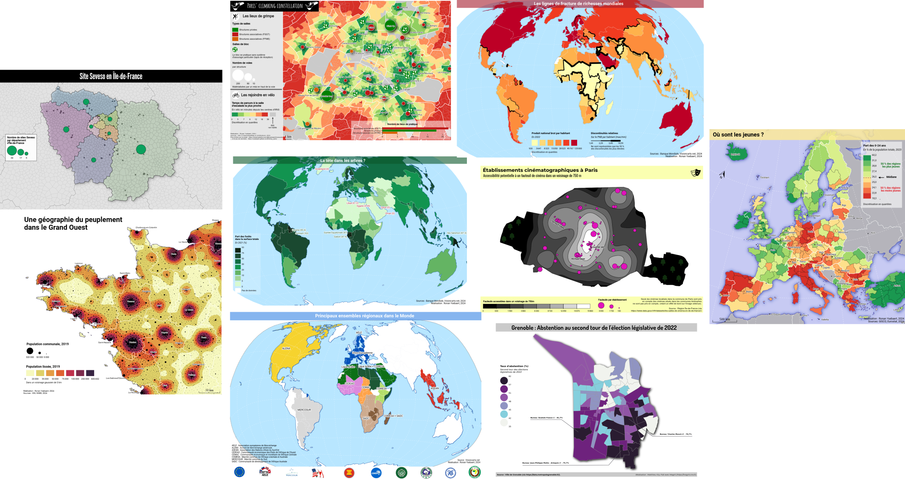
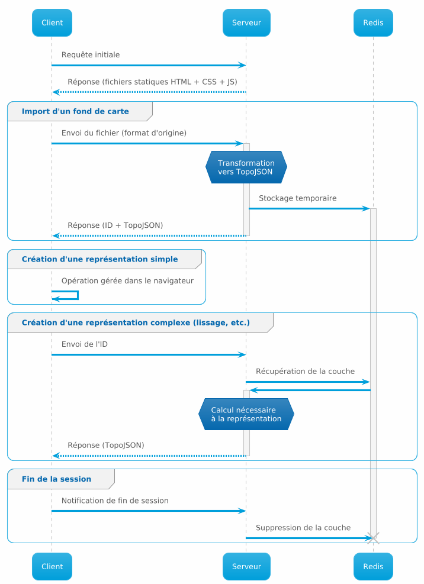

Magrit üåè
Cartographie thématique
24 Septembre 2024 - Webinaire MAGIS AR9
Plan de la pr√©sentation üìù
- Magrit nouvelle version
- Démonstration
- Perspectives d’évolutions
1. Magrit… “nouvelle version” ?
La genèse du projet Magrit
- Contexte :
- l’enseignement de la cartographie thématique à l’université
- la réalisation de cartes thématiques par un public non-expert (débutants, chercheurs dans d’autres disciplines que la géographie, etc.)
- Quels outils pour produire des cartes thématiques ? Quels outils pour enseigner la cartographie thématique ?
- PhilCarto, QGIS, InkScape / Adobe Illustrator ?
➔ En 2016, pas d’outils simple, complet et multiplateforme
La genèse du projet Magrit
- Objectif : développer un outil de cartographie thématique simple d’utilisation, complet et utilisable sur tous les systèmes d’exploitation
- Conçu et développé à l’UAR RIATE
- Projet financé par l’UAR RIATE sur fonds propres, initié en 2016 et rendu public en 2017
Magrit v1
- 02/2017 - 07/2024 : 7 ann√©es de bons et loyaux services üòÖ

Magrit v2
- Juillet 2024 : publication de la version 2 de Magrit ü™©
- Toujours les mêmes fonctionnalités classiques :
- Chargement de données (GeoJSON, Shapefile, KML, GeoPackage, CSV, Excel, OpenOffice, etc.)
- Représentation cartographique (choroplèthe, symboles proportionnels, discontinuités, etc.)
- Personnalisation des cartes (légende, titre, échelle, etc.)
- Export des cartes (PNG, SVG) et des données (idem formats d’import)
- Sauvegarde des projets
Fonctionnalités de représentation cartographique
Choroplèthe
Fonctionnalités de représentation cartographique
Choroplèthe
Fonctionnalités de représentation cartographique
Catégories
Fonctionnalités de représentation cartographique
Catégories
Fonctionnalités de représentation cartographique
Discontinuités
Fonctionnalités de représentation cartographique
Symboles proportionnels
Fonctionnalités de représentation cartographique
Symboles proportionnels
Fonctionnalités de représentation cartographique
Symboles proportionnels
Fonctionnalités de représentation cartographique
Cartogrammes
Fonctionnalités de représentation cartographique
Carroyages
Fonctionnalités de représentation cartographique
Aggrégation d’un semis de points (choroplèthe ou symboles proportionnels)
Fonctionnalités de représentation cartographique

Lissage (Potentiel de Stewart, KDE)
Fonctionnalités de représentation cartographique
Liens / Flux
À combiner et habiller pour obtenir des cartes complexes…

Magrit v2
C’est donc :
- Toujours un outil de cartographie thématique simple, complet et disponible sur le Web…
- ‚Ķ mais avec une refonte totale de l‚Äôinterface utilisateur, de la documentation, de l‚Äôarchitecture, et de nombreux ajouts‚Ķ üë∑üèª
Refonte de l’interface utilisateur
- Interface plus claire et plus ergonomique üßëü躂Äçüíª
- Plus de cohérence dans l’interface (boutons, menus, etc.)
- Th√®me sombre üåí
Nouvelles fonctionnalités de représentation et d’analyse
Sélection attributaire
Créer une nouvelle couche à partir d’une sélection d’entités
(sans les NUTS ultra-marins par exemple)…
Nouvelles fonctionnalités de représentation et d’analyse
Aggrégation spatiale
Nouvelles fonctionnalités de représentation et d’analyse
Régression linéaire et cartographie des résidus

Nouvelles fonctionnalités de représentation et d’analyse
Simplification des géométries
Nouvelles fonctionnalités de représentation et d’analyse
Calculatrice de champs
- Syntaxe SQL-like (comme dans QGIS) pour calculer des champs à partir d’autres champs
Nouvelles fonctionnalités de personnalisation
Mais aussi…
- Am√©lioration de la documentation üìö
(ajout de tutoriels, etc.)
- Nouvelles m√©thodes de discr√©tisation üìè
(CKMeans, moyennes emboitées, etc.)
- Am√©lioration des √©l√©ments d‚Äôhabillages üé®
(ligne brisée / flèche, échelle, dessin libre, etc.)
Un respect total de la vie privée
- Pas de collecte de donn√©es personnelles ü•∑üèº
Aucun compte utilisateur, aucun tracker, aucun cookie, aucun service tiers (pas de Google Fonts, etc.), pas de données stockées sur un serveur distant ni transférées sur le réseau, …
Et une version desktop
- Pour une utilisation hors-ligne, hors du navigateur Web üñ•Ô∏è
- Téléchargement de l’application pour Windows, MacOS ou Linux puis, pas de connexion Internet requise
Un respect total de la vie privée
- Dans la v1…

Un respect total de la vie privée
- Dans la v2, version Web…
2. Démonstration
Démonstration avec des données ouvertes
(≈ 7-10 min)
- Nous allons réaliser une carte thématique à partir de données ouvertes :
- Données : Open Data Ville de Grenoble
- Objectif : Représenter le taux d’abstention par bureau de vote lors des élections législatives de 2022
Exemple de résultat
3. Perspectives d’évolution
Nouvelles fonctionnalit√©s d‚Äôanalyse statistiques üìä
- Réalisation d’ACP (Analyse en Composantes Principales)
+ CAH (Classification Ascendante Hiérarchique)
Composants en cours
de développement…
Ajout de templates cartographiques prédéfinis
- Europe et territoires ultra-marins, France Métropolitaine + DROM, etc.
Amélioration des performances
- Améliorer la fluidité de l’affichage et de la navigation dans l’interface lors de l’utilisation de gros jeux de données ⚠️
4 milliards de sommets üò±
Difficile de naviguer de continuer à utiliser SVG pour l’affichage interactif dans l’interface…
- SVG → Canvas ? WebGL ?
Correction de bugs
Corriger les bugs remont√©s par les utilisateur.trice.s‚Ķ üêû
(de nombreux retours depuis Juillet 2024 ! merci √† toutes celles et ceux ayant pris le temps de nous remonter des bugs !)‚Ķ et continuer √† publier r√©guli√®rement des mises √† jour üîÑ
Merci de votre attention
Magrit : https://magrit.cnrs.fr/
Dépôt GitHub : https://github.com/riatelab/magrit
Supports de formation : https://github.com/magrit-formations
Slides : https://riatecom.github.io/Magrit-MagisAR9-2024/
Contact : matthieu.viry@cnrs.fr
Et d’un point de vue technique…
- Plusieurs modules WebAssembly pour les calculs plus lourds :
- gdal3.js (ouverture de fichiers géospatiaux ou tabulaires)
- geos-wasm (intersection, union, buffer, etc.)
- contour-wasm (calculs de contours)
- GPU.js pour les calculs sur GPU (potentiel de Stewart, KDE)
- Electron pour la version desktop